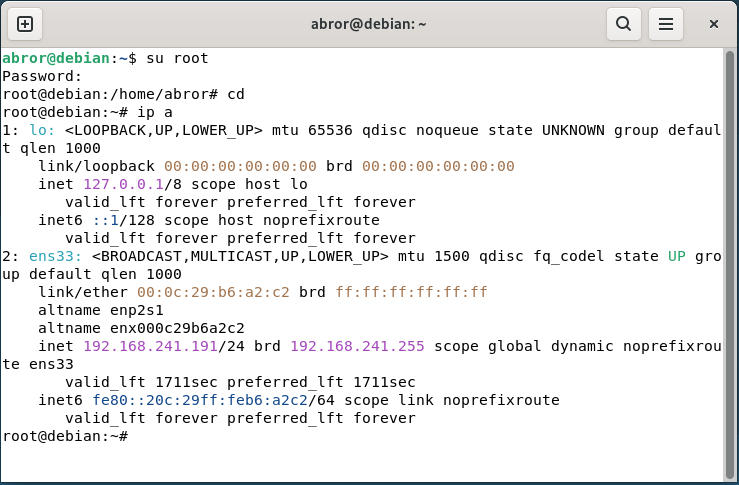
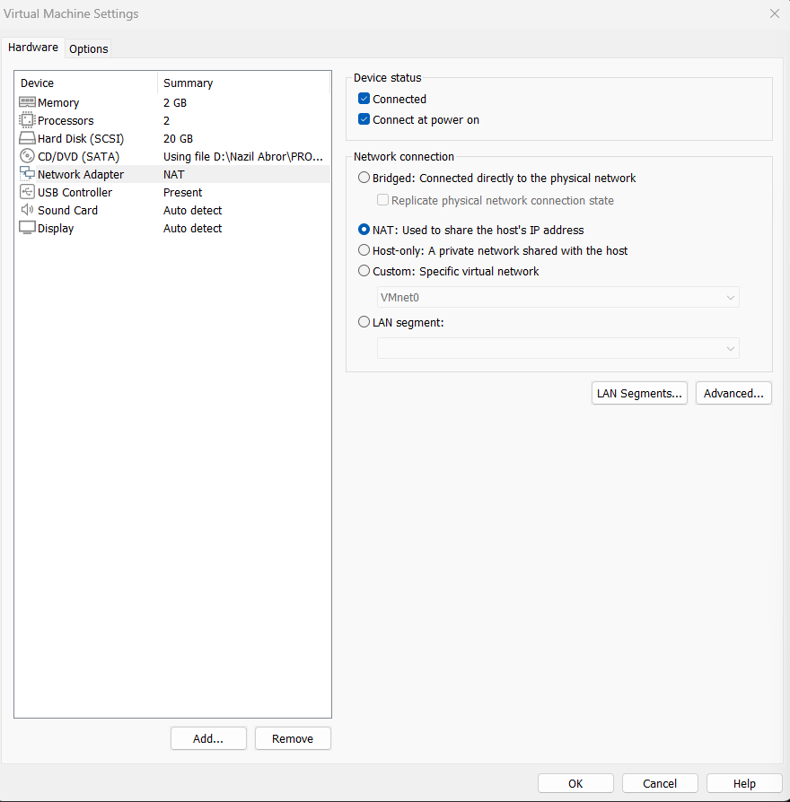
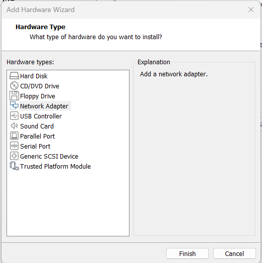
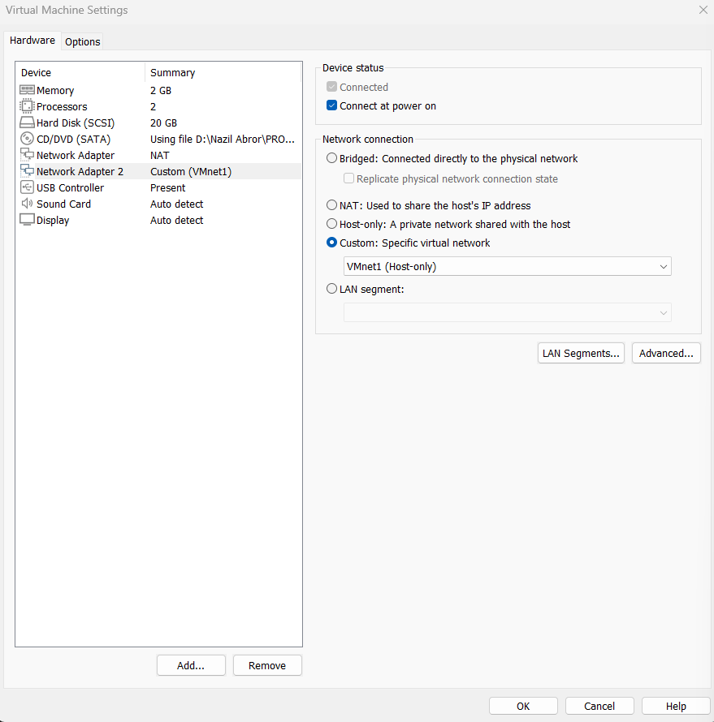
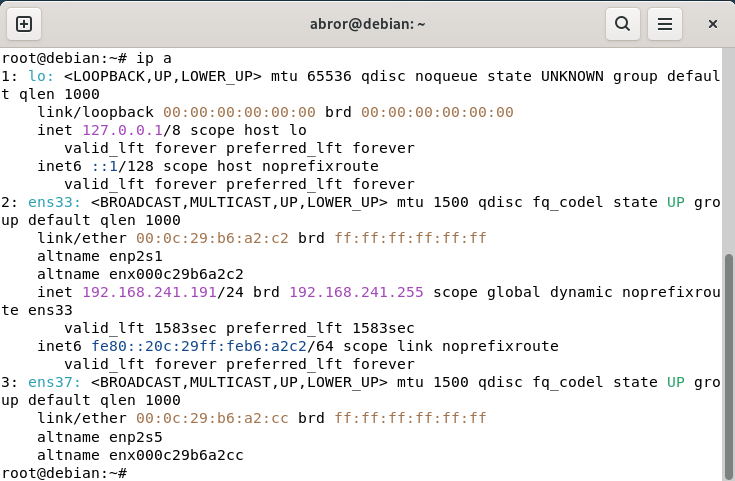
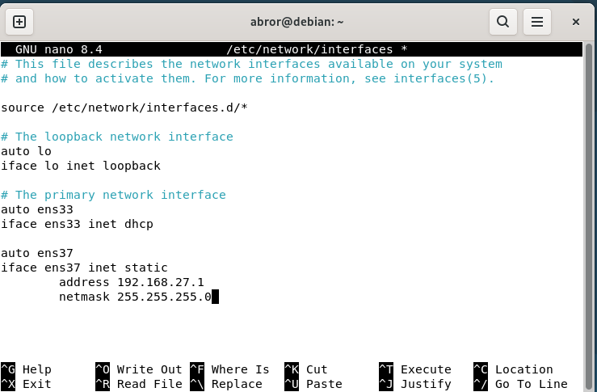
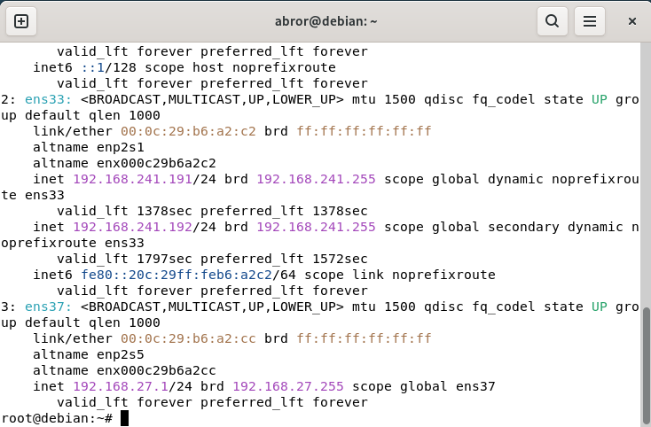
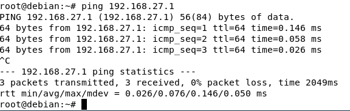
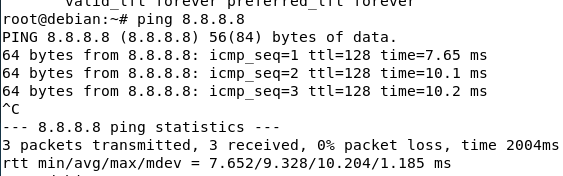

Konfigurasi 2 Network
Jobsheet ini menjelaskan cara menambahkan network interface kedua pada Debian yang berjalan di VMware, agar komputer memiliki dua jalur koneksi sekaligus: satu untuk internet (NAT) dan satu untuk jaringan lokal (Host-only). Ikuti langkah-langkah di bawah ini secara berurutan.
1. Periksa Koneksi Internet pada Network Pertama (ens33)
Sebelum menambah network baru, pastikan network pertama sudah aktif dan terkoneksi ke internet. Buka terminal, masuk sebagai root, lalu ketik perintah berikut untuk melihat daftar interface yang aktif:
#ip a

2. Pastikan Network Adapter Pertama dalam Mode NAT
Mode NAT membuat Debian bisa mengakses internet lewat koneksi host (komputer utama). Buka menu Virtual Machine Settings di VMware, pilih Network Adapter, lalu pastikan opsi NAT sudah tercentang seperti gambar berikut.

3. Tambahkan Network Adapter Kedua
Selanjutnya tambahkan adapter jaringan baru agar Debian memiliki 2 interface. Masih di jendela Virtual Machine Settings, klik tombol Add, lalu pilih Network Adapter, dan klik Finish.

Pada Network Adapter 2 yang baru muncul, pilih Custom: Specific virtual network, lalu pilih VMnet1 (Host-only). Mode ini membuat network kedua hanya terhubung ke jaringan lokal (antar VM atau ke host), bukan ke internet.

4. Restart Debian dan Periksa Interface Baru
Setelah itu cek dengan perintah:
#ip a
Sekarang akan muncul interface baru bernama ens37. Interface ini belum memiliki alamat IP karena belum dikonfigurasi.

5. Konfigurasi Alamat IP untuk Network Kedua (ens37)
Buka file konfigurasi network menggunakan perintah:
#nano /etc/network/interfaces
Tambahkan konfigurasi berikut di bagian bawah file untuk mengatur ens37 dengan IP statis. Sesuaikan alamat IP sesuai kebutuhan atau nomor urut absen:
auto ens37
iface ens37 inet static
address 192.168.27.1
netmask 255.255.255.0

Setelah selesai, simpan file dengan menekan Ctrl+O lalu Enter, dan keluar dengan Ctrl+X.
6. Restart Network dan Periksa Ulang
Terapkan konfigurasi yang baru dibuat dengan merestart layanan network:
#systemctl restart networking
Pastikan tidak ada output apa-apa (kosong) setelah restart.
Cek kembali dengan perintah #ip a
untuk memastikan ens37 sudah memiliki alamat IP sesuai yang dikonfigurasi.

7. Uji Koneksi Kedua Network
Terakhir, lakukan pengujian dengan perintah ping untuk memastikan kedua network berjalan dengan baik.
a. Uji koneksi ke network kedua (lokal / ens37):
#ping 192.168.27.1

b. Uji koneksi ke internet (network pertama / ens33):
#ping 8.8.8.8

Jika kedua ping berhasil mendapatkan reply, artinya kedua network interface sudah berfungsi dengan benar: ens33 untuk internet dan ens37 untuk jaringan lokal.